Guide
This guide covers each settings pane. MockTab saves every change automatically.
Getting started
Open Devices to check that MockTab sees the tablet, then Tablet Area to set the active area and orientation. The panes:
- Devices: connected tablets, battery, and connection.
- Profiles: named presets and per-app settings.
- Buttons: pen buttons, ExpressKeys, touch rings, and dials.
- Tablet Area: active area and orientation.
- Display: which display, and alignment.
- Pen Feel: pressure, steadiness, clicks, and rotation.
- Touch: finger scrolling, tapping, and touch area, on tablets with touch.
- Scratchpad: a blank canvas for testing.
- Info: live tablet state, for troubleshooting.
Settings
Settings affect multiple levels:
- Device defaults: the baseline for the tablet.
- Pen settings: each pen, eraser, and mouse keeps its own pressure curve and buttons, so two pens can feel different.
- Active profile: a named preset that overrides the defaults.
- App settings: apply only while a given app is in front.
Editing an app's settings leaves the profile beneath unchanged. The bar at the bottom of the window shows which app's settings are active.
Devices
The Devices pane lists every tablet MockTab has found, with its name, connection, and battery level.
Each connected tablet has its own settings. Switch between them with the tabs at the top of the window.
For Bluetooth pairing and other setup, see Configuration.
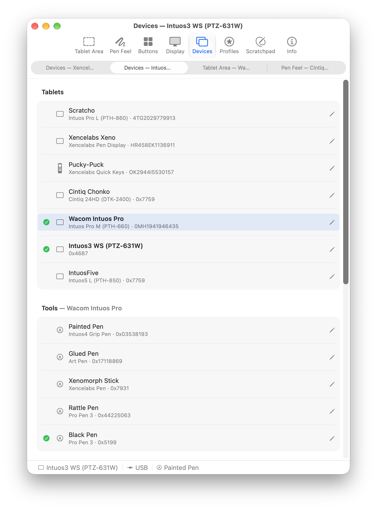
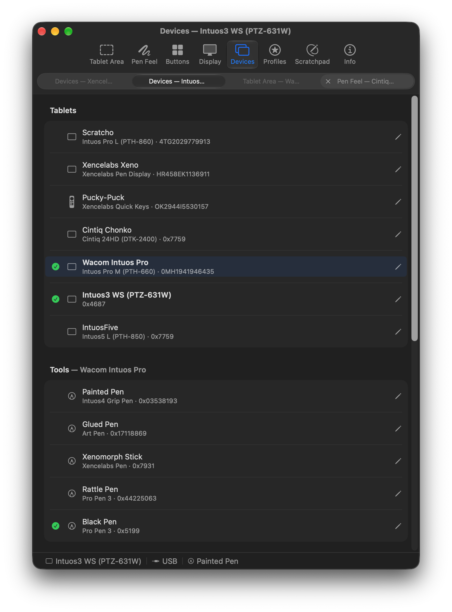
Profiles
A profile saves a tablet's settings, such as display, pressure, and buttons, so you can switch between workflows.
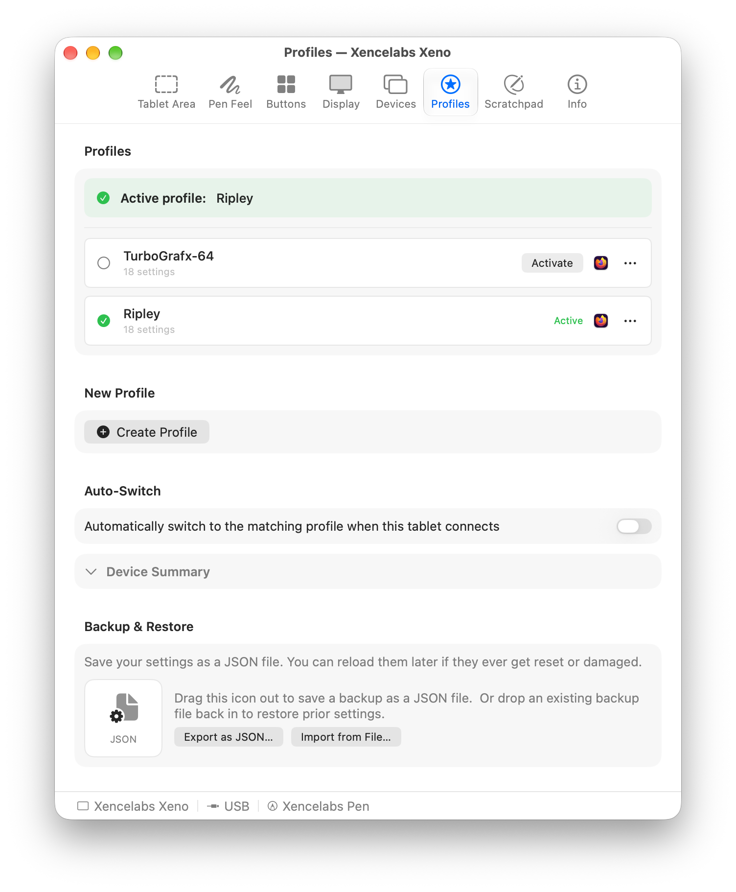
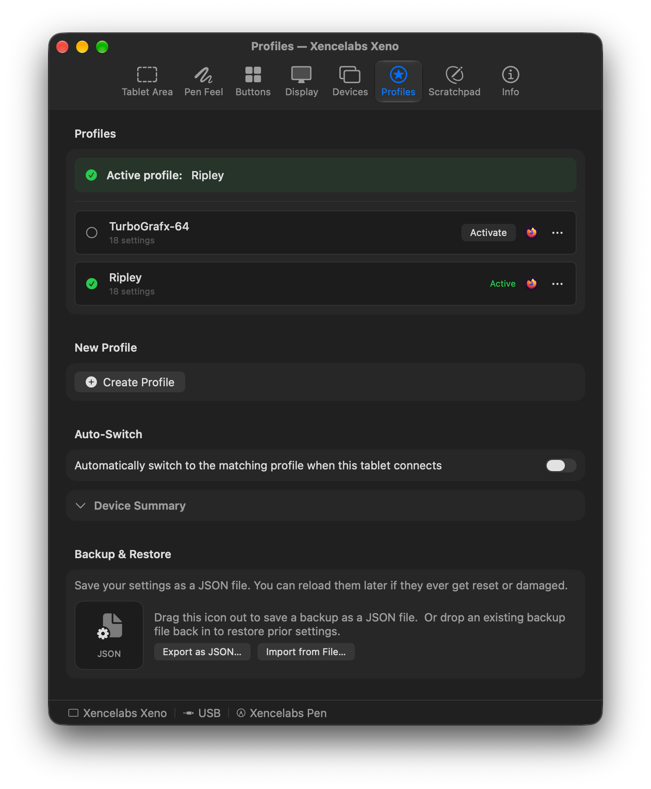
Per-app overrides
The bar at the top of the Buttons, Tablet Area, Display, and Pen Feel panes holds per-app settings. Global edits the shared settings; an app's chip edits that app's own.
Add an app from the menu, or drag it onto the bar from the Finder or the Dock. To drag from the Dock, hold ⌘.
An app appears in the bar once it has its own settings. Removing it deletes them, and the shared settings apply again.
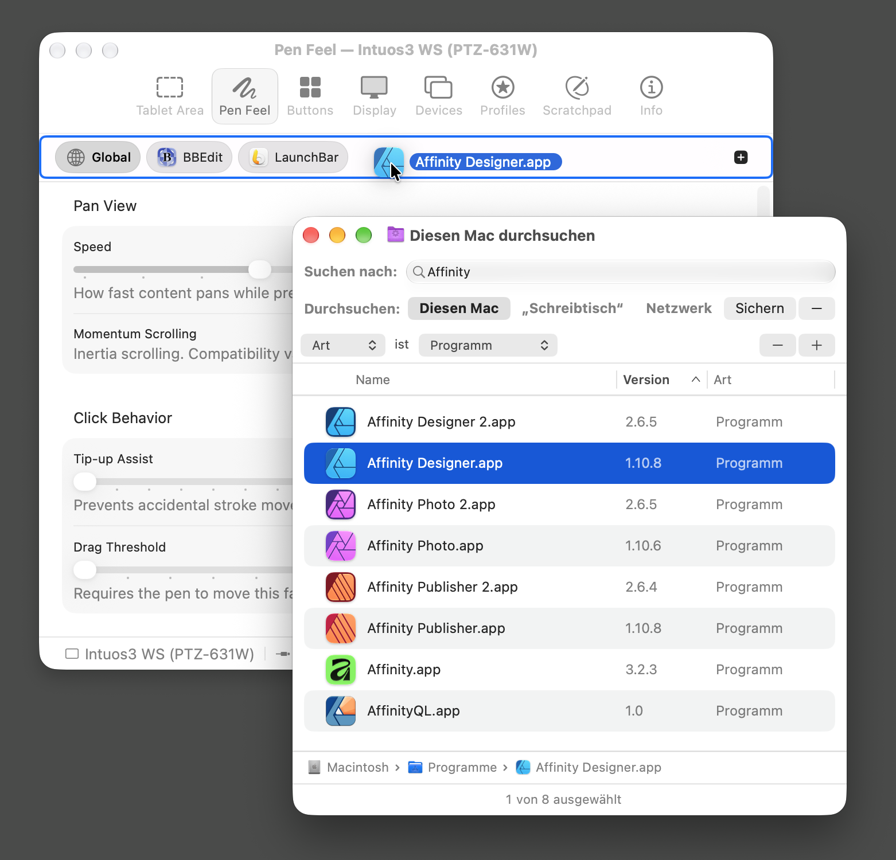
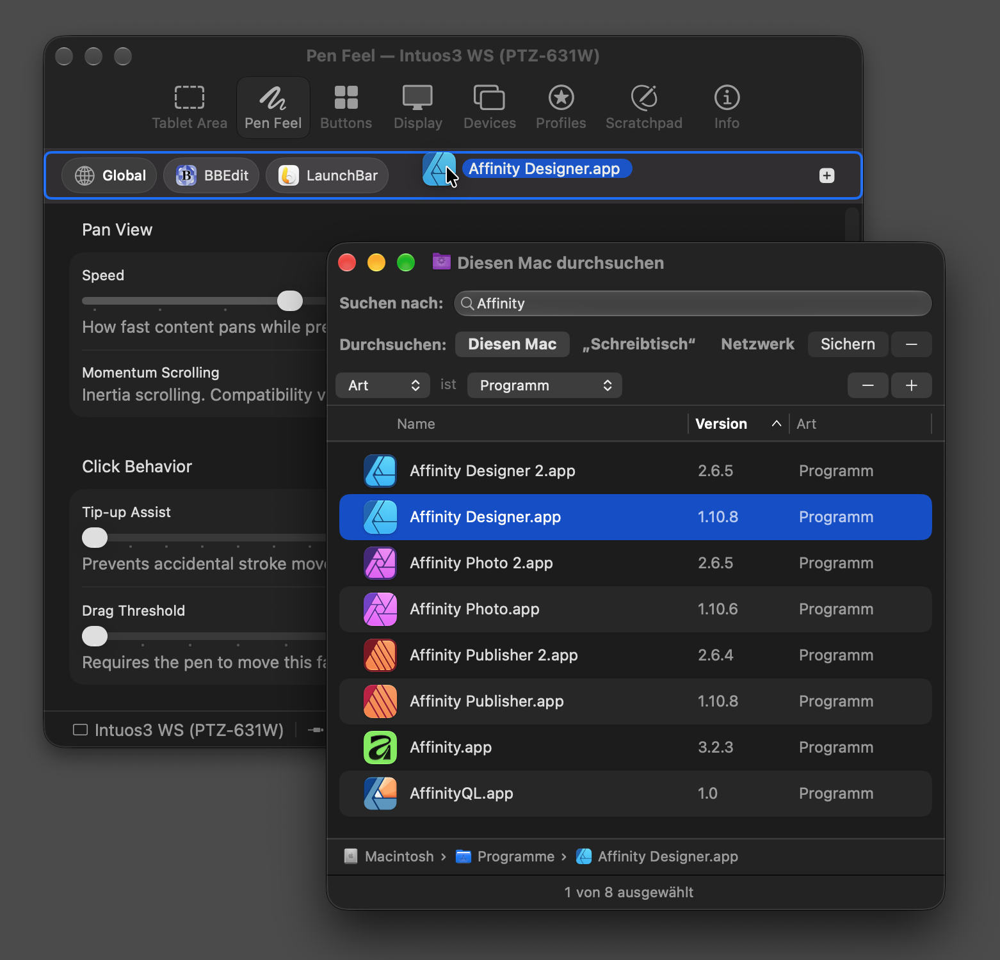
Export and import
Drag the JSON tile in the Profiles pane to the Finder to save all settings. Drag a file onto the tile to import it and choose which tablets to bring in.
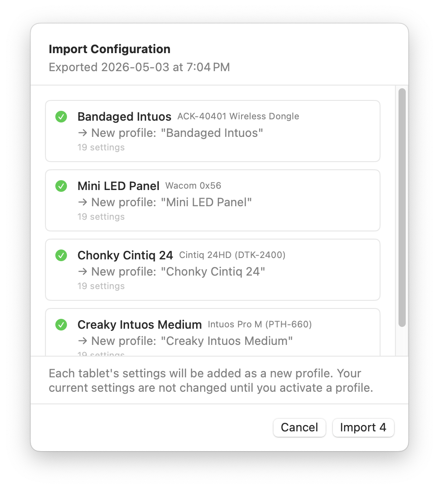
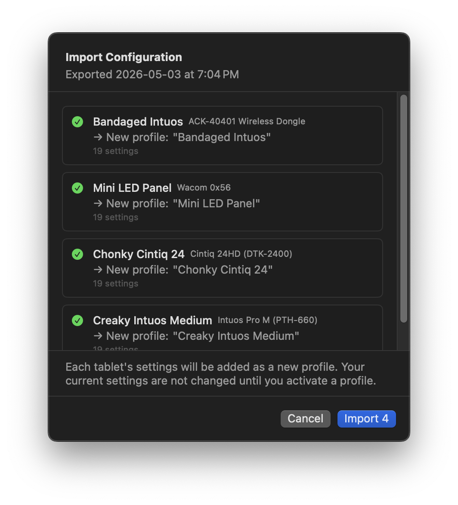
Buttons
The Buttons pane assigns actions to every control: pen tip, eraser, pen buttons, ExpressKeys, touch rings, and dials.
Recognized tablets, pens, and mice appear as a diagram. Press a control to highlight it, or click part of the diagram to jump to its settings.
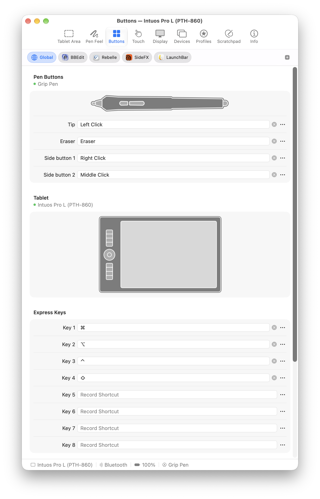
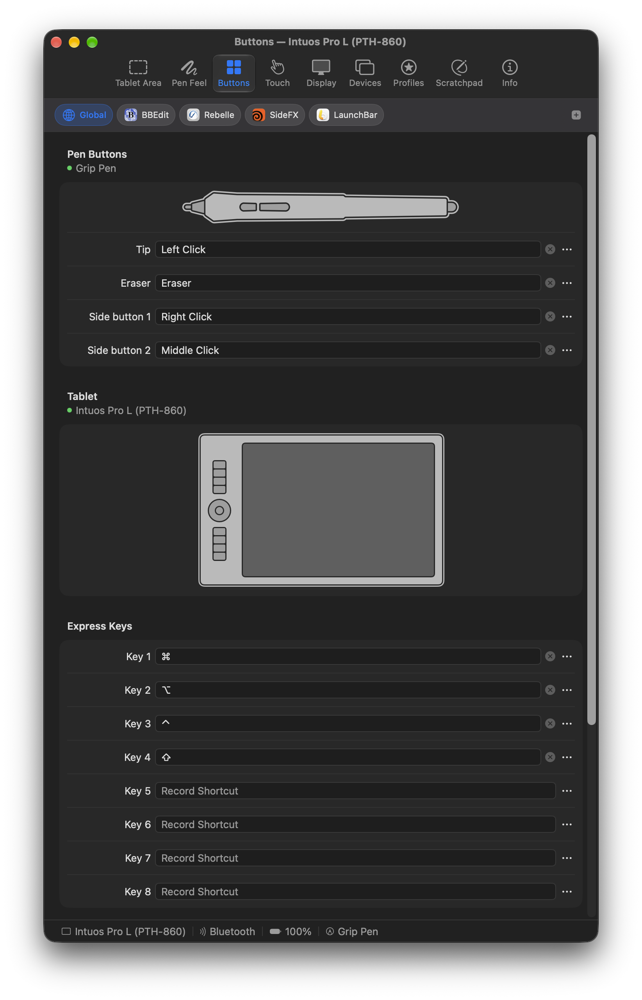
Binding kinds
Each button can do one of these:
-
Left / Right / Middle Click
Clicks at the cursor. Require Contact in Pen Feel can make a side button wait for the tip to touch.
-
Click Lock
Holds the left button down until the next press, for long drags without holding a button.
-
Double Click
Double-clicks.
-
Eraser
Switches to the eraser in many creativity apps.
-
Spacebar / Escape
Presses Space or Esc. Space suits apps that pan with Space and drag.
-
Key Combination
Sends a keyboard shortcut, with optional modifiers (⌘ ⌥ ⇧ ⌃). Click the record button and type the shortcut.
-
Function Keys
Sends F13 through F19, which most keyboards lack. No app claims them, so they make good hotkeys for menu and launcher apps.
-
Toggle Display
Moves the tablet to the next display. Choose the displays in the Display pane.
-
Span Displays
Spreads the tablet across the displays chosen in the Display pane. Press again to go back.
-
Ring: Cycle / Dial: Cycle
Moves the touch ring or dial to its next mode. See Touch rings, dials, and slots.
-
Ring: Mode N / Dial: Mode N
Jumps the touch ring or dial straight to one mode.
-
Pan View
Drags the canvas like a hand tool while held. Pen Feel can reverse it or let it coast. Some apps and websites don't support it; see Panning.
-
Toggle Relative Mode
Turns relative cursor movement on and off.
-
Show MockTab Settings
Opens the tablet's settings at the Buttons pane.
Recording key combinations
Click the record button next to a Key Combination, then type the shortcut. A modifier alone, such as ⌘, acts like the real key, which some Adobe apps rely on.
Shortcuts keep working if your keyboard layout changes, for example with Qwerty-Control for Dvorak while you hold ⌘.
Pen buttons
Button 1, the lower side button, starts as Right Click, and Button 2 as Middle Click. Some pens and mice have buttons 3 to 5.
A button set to Left, Right, or Middle Click also drags while the pen hovers. Require Contact in Pen Feel turns this off.
A Wacom mouse or puck gets its own diagram and button rows. Its first three buttons start as Left, Right, and Middle Click.
Express keys
ExpressKeys are the buttons on the tablet itself, and each can do anything a pen button can.
An Intuos4 with key displays shows each key's action beside it while connected by USB. The displays dim after 5 minutes without input and turn off after 10.
Touch rings, dials, and slots
Touch rings, dials, and the scroll wheel on some Intuos models work the same way. Each has up to four modes, called slots, with their own action and speed. Ring lights show the current slot, and the center button has its own action.
On tablets with two dials, each dial has its own slots, and the Dial 2 actions switch the second one.
Each slot uses one of these modes:
| Mode | What it sends | Speed |
|---|---|---|
| Scroll | macOS scroll wheel events. | Lines scrolled per step. Above 1.0 is faster; below is finer. |
| Zoom | Smooth pinch-to-zoom, like a trackpad. | Off to Max. |
| Rotate | Smooth two-finger rotate, like a trackpad. | Off to Max. At Max, one full turn of the ring or dial turns the canvas 360°. |
| Key | One shortcut for clockwise and another for counterclockwise. | Higher values send more presses per step. |
| Off | Nothing. | — |
| Skip | Nothing, and Cycle skips this slot. | — |
Record the shortcuts the same way as for pen buttons, such as brush size ([ / ]).
Touch strips on older Intuos and Cintiq tablets use slots too, one set per strip. On the Cintiq 21UX2 and 22HD, a Strip Toggle button sits beside each strip.
Assign Cycle to a pen button or ExpressKey to change modes without looking.
On tablets with lights, each slot's Light row sets its color and brightness.
Xencelabs Quick Keys
The remote's screen labels each key with its action, as on Intuos 4 tablets. Rotation, OLED Brightness, and Sleep Timer adjust the screen.
Tablet Area
The Tablet Area pane sets which part of the tablet maps to the display. Drag the rectangle or its handles; it snaps to the screen area's shape. Fit to Tablet, Fit to Screen Area, and Best Fit size it in one click, and Edit Mapping takes exact numbers. Help lists the modifier and arrow keys.
Proportional mapping matches the area's shape to the display's, so circles stay round instead of stretching into ovals.
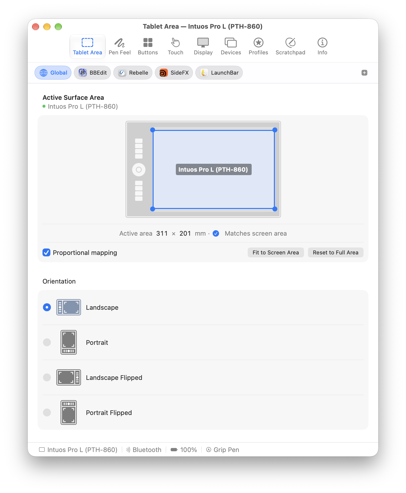
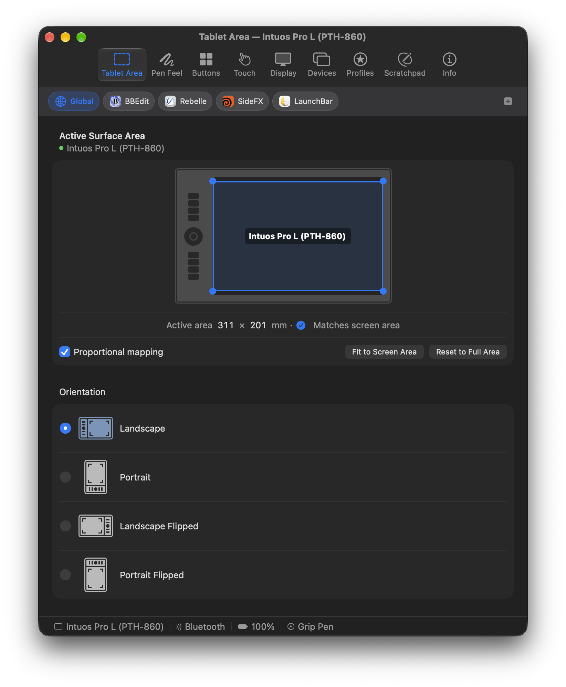
Tablet orientation
Choose the orientation that matches how the tablet sits on your desk, or press ⌘⌥1 through ⌘⌥4 in the Tablet Area pane. The pen, touch, and tilt follow, and the Buttons pane draws the tablet as it sits.
Turning the tablet moves each assignment to the key now in its place, in every profile and app override. Undo reverses both together.
To move assignments alone, right-click the tablet drawing in the Buttons pane and choose Turn Assignments Around. Choose it again to put them back.
Display
The Display pane chooses which screen the tablet controls, and fine-tunes alignment.
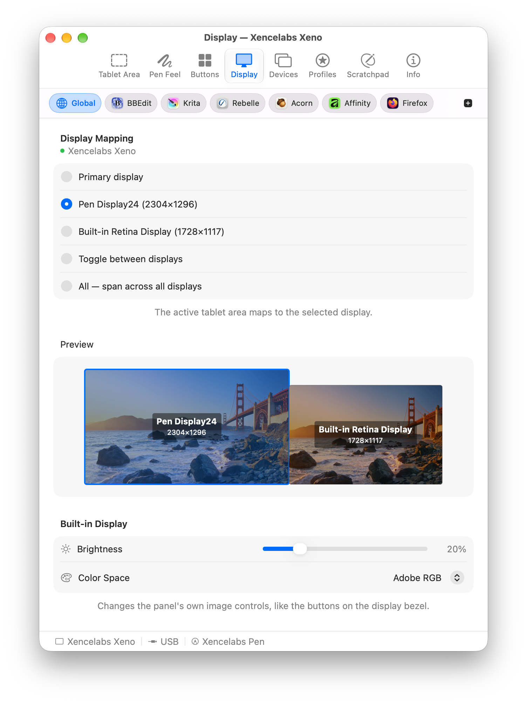
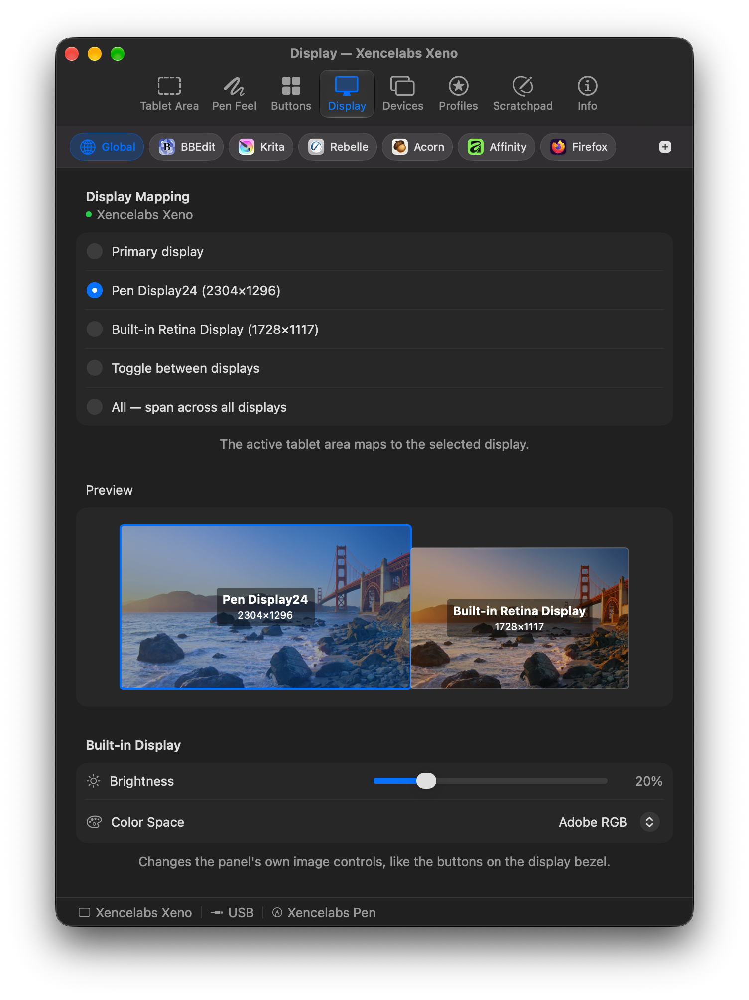
Target display
Primary display uses the main screen, and a numbered display uses that monitor. Toggle between displays moves on with each press of a Toggle Display button. All spans every display.
Active Displays chooses which monitors the toggle visits.
Calibration
Pointer Offset shifts the cursor. On pen displays, use it to line the cursor up with the pen tip.
Parallax Offset allows even finer adjustment, below a single pixel.
On supported pen displays, Brightness, Contrast, and, where available, Gamma and Color Space adjust the screen itself.
Pen Feel
The Pen Feel pane adjusts how the pen responds.
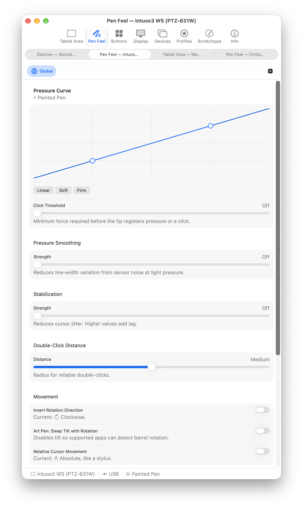
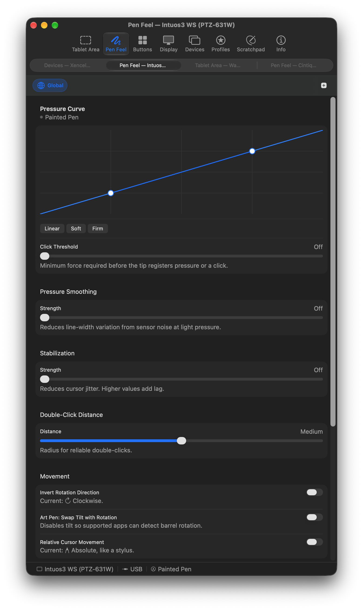
Pressure curve
The pressure curve shapes how pen pressure reaches the app. Three presets come built in:
- Linear: pressure passes through unchanged. Use it when the app has its own curve.
- Soft: pressure builds gradually from a light touch. Suits ink and brush work that needs control at low pressure.
- Firm: takes more force before pressure rises. Suits markers and technical drawing that want a crisp minimum line.
Drag the handles to shape the curve. Across is how hard you press; up is what the app receives.
Steadiness
Steadiness smooths the cursor against hand tremor. Higher values smooth more but add lag; for pixel-precise work, set it to zero.
Steadiness moves only the cursor, and eases off during fast strokes.
Pressure Smoothing steadies pressure on its own. Click Threshold sets how hard you press before the tip clicks.
Drag Threshold keeps a tap from turning into a small drag. Tip-up Assist keeps a fast stroke's end from getting clipped when you lift the pen.
Require Contact makes checked side-button actions wait for the tip to touch. Unchecked ones also work while the pen hovers.
Double-click distance
MockTab moves a second tap onto the first when it lands close by, so small hand movements don't break a double-click. Zero turns this off.
Rotation handling
Invert Rotation Direction reverses Art Pen barrel rotation for the whole tablet, or for single apps through the per-app bar.
Photoshop, Illustrator, Krita, and Rebelle all read Art Pen rotation. See Application notes for where each app shows it.
Relative cursor movement
In relative mode, the pen moves the cursor from where it is, like a mouse, instead of to a fixed point on the screen.
Relative mode ignores display and alignment settings. The pen can reach every corner of every display.
You can also assign Toggle Relative Mode to a button (see Binding kinds).
Touch
The Touch pane sets up finger touch, with its own switch, cursor speed, and area, separate from the pen.
Enable Finger Touch turns touch on. Some tablets also have a touch switch on the tablet itself, which must be on too.
Two-finger scroll works like a Magic Trackpad, including the bounce at the edges. Reverse Direction makes it feel like a mouse wheel. Cursor Speed sets how fast one finger moves the cursor.
Tap to Click clicks with a brief touch. Two-Finger Right-Click right-clicks with a brief two-finger touch. With Three-Finger Drag, three fingers hold the mouse button down while they move.
Momentum Scrolling, off by default, keeps content coasting after you lift your fingers. Pen Feel has the same setting for Pan View, and the per-app bar can turn either on for single apps.
Pinch to Zoom and Rotate work like the trackpad gestures, and each gesture turns on and off separately.
The Touch Area editor works like the Tablet Area editor, separately from the pen area. Touches outside it do nothing.
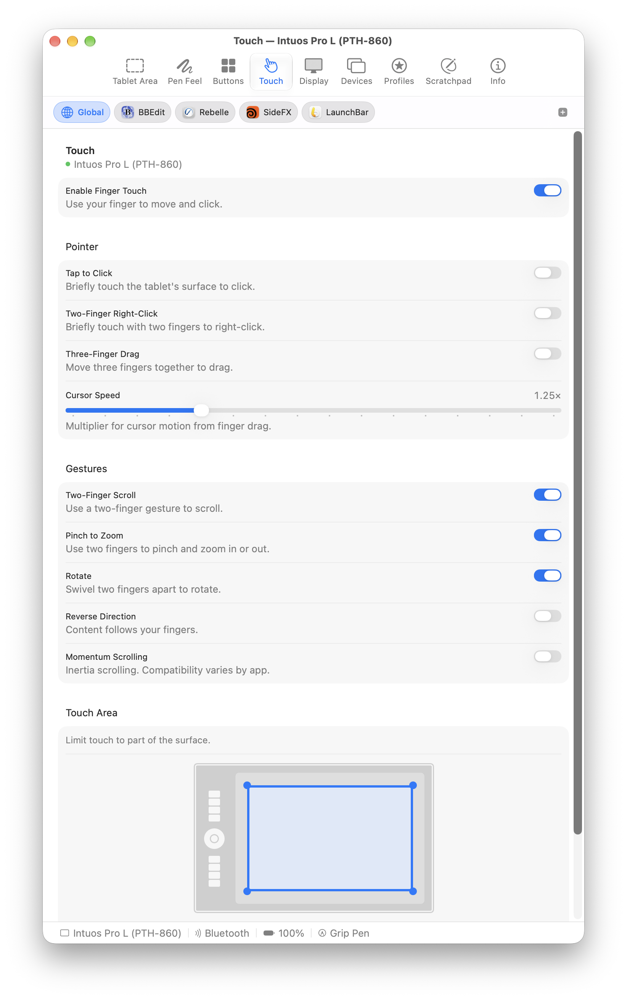
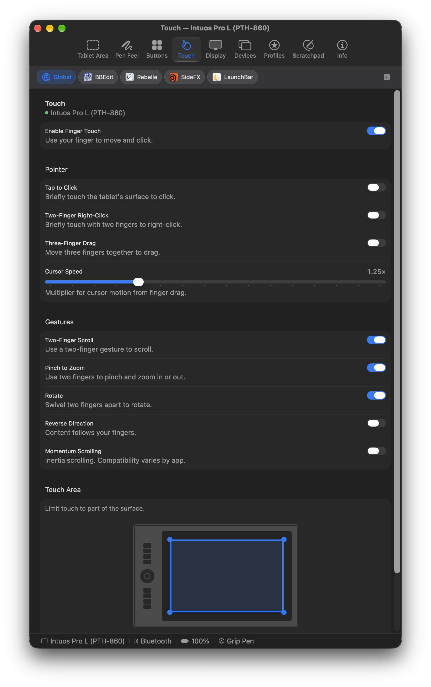
Scratchpad
The Scratchpad is a blank canvas for checking that the pen registers pressure and motion. MockTab doesn't save what you draw.
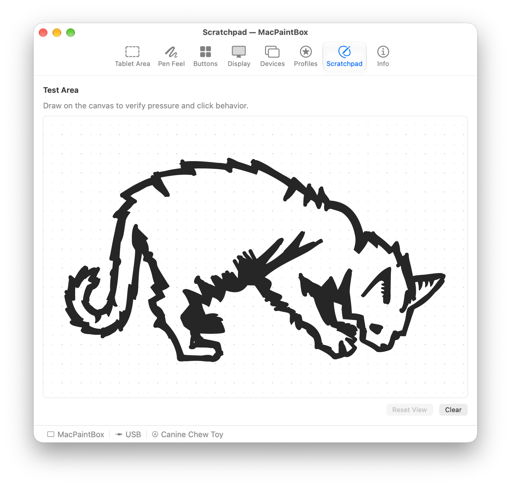
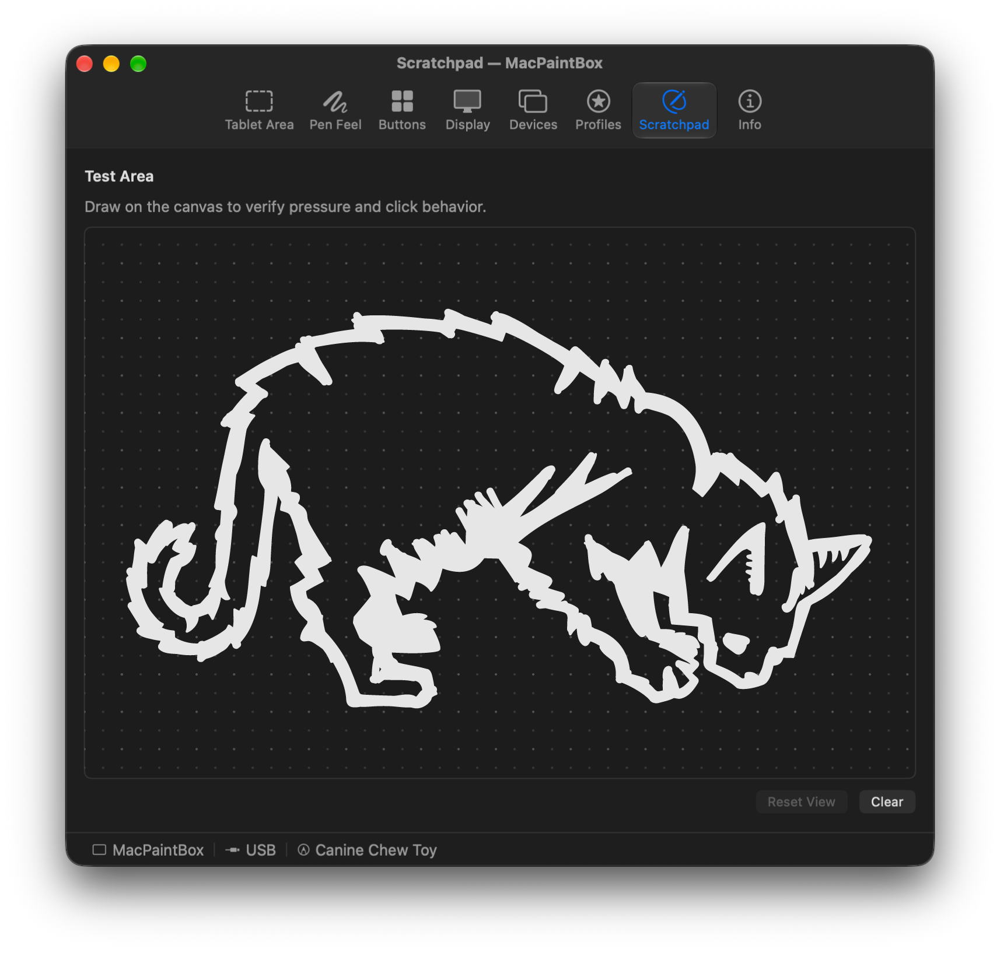
Info
The Info pane shows the tablet's live state as gauges: position, pressure, tilt, rotation, hover height, and touch.
Use it to check that the tablet sends data, that a button works, or that the cursor lines up.
On an Intuos5 or Intuos Pro (2013) with the Wacom wireless kit, the Battery row also sets how long the tablet sits unused before it sleeps.
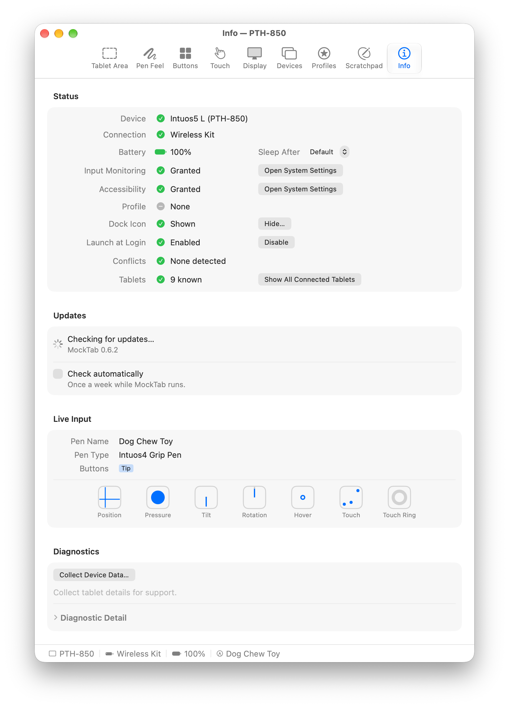
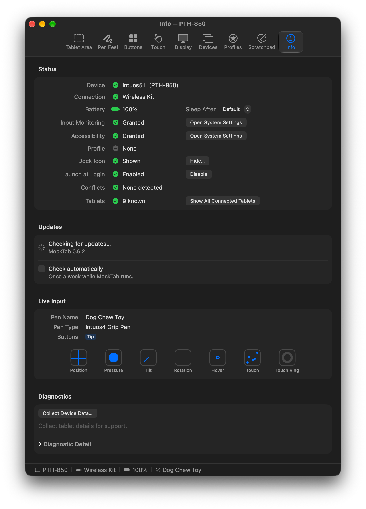
Collecting device data
Choose Help › Collect Device Data…, or click Collect Device Data… in the Info pane. Work through the sheet's list as far as your tablet allows; each item checks off when the tablet reports it. Then click Done.
MockTab saves everything in a zip file on the Desktop. From the finished sheet, open a GitHub issue and drag the file in, or send it by email.
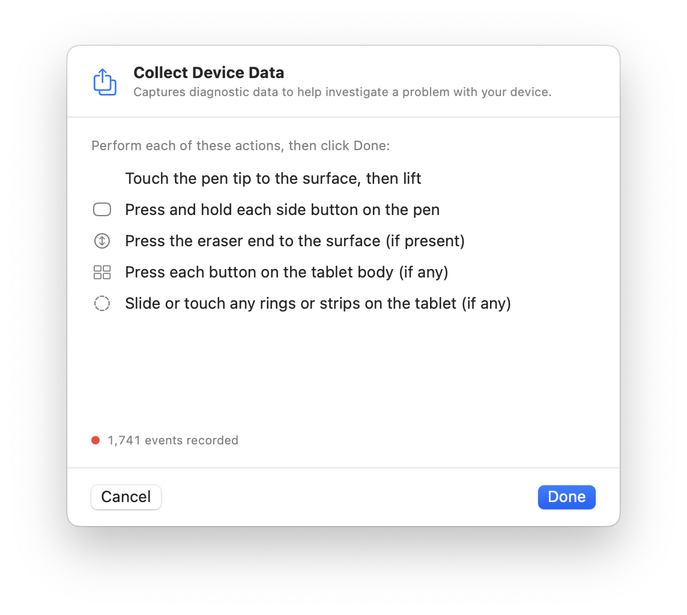
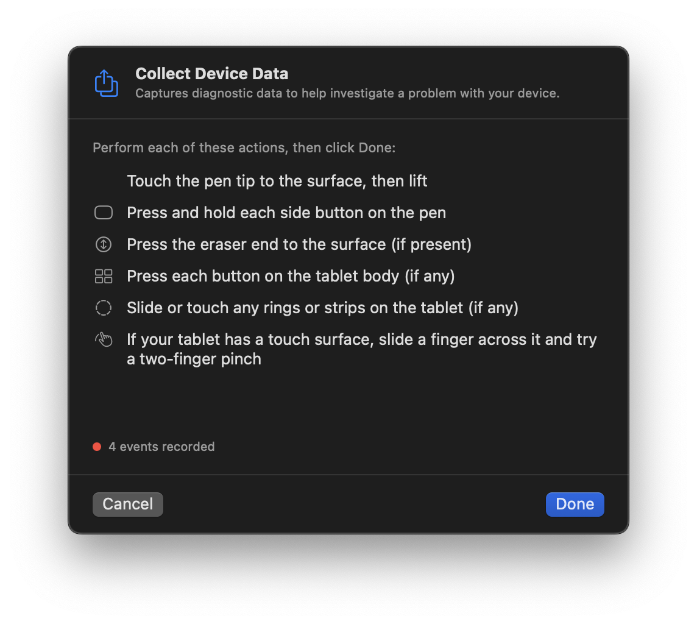
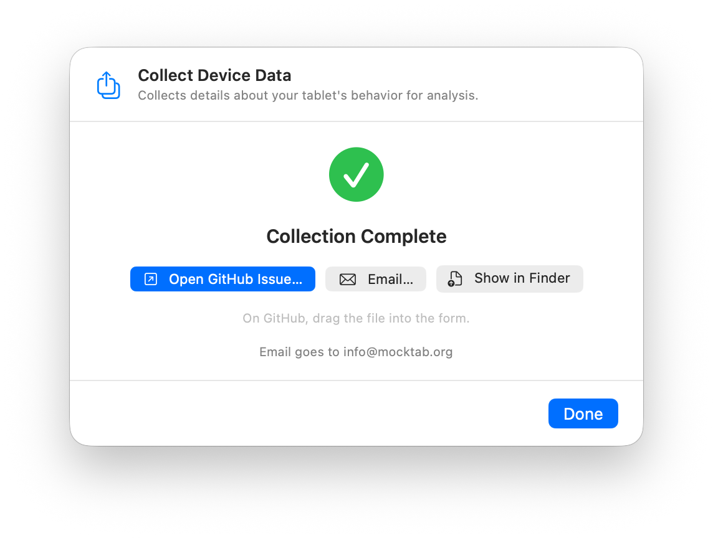
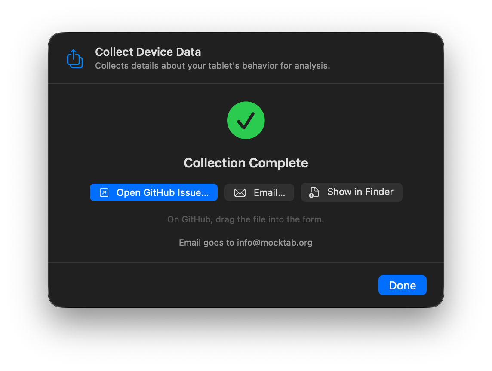
Getting help
For more help, open an issue on GitHub. To get the latest version, choose MockTab › Check for Updates.